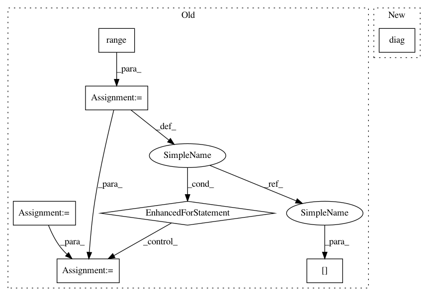

d00d10952c9e634c3ab498029c427f839b25a0be,GPy/kern/coregionalise.py,coregionalise,dKdiag_dtheta,#coregionalise#Any#Any#Any#,73
Before Change
def dKdiag_dtheta(self,partial,index,target):
index = np.asarray(index,dtype=np.int).flatten()
partial_small = np.zeros(self.Nout)
for i in range(self.Nout):
partial_small[i] += np.sum(partial[index==i])
dW = 2.*self.W*partial_small[:,None]
dkappa = partial_small
target += np.hstack([dW.flatten(),dkappa])
After Change
pass
def dKdiag_dtheta(self,partial,index,target):
self.dK_dtheta(np.diag(partial),index,index,target)
In pattern: SUPERPATTERN
Frequency: 3
Non-data size: 7
Instances
Project Name: SheffieldML/GPy
Commit Name: d00d10952c9e634c3ab498029c427f839b25a0be
Time: 2013-03-06
Author: james.hensman@gmail.com
File Name: GPy/kern/coregionalise.py
Class Name: coregionalise
Method Name: dKdiag_dtheta
Project Name: SheffieldML/GPy
Commit Name: d00d10952c9e634c3ab498029c427f839b25a0be
Time: 2013-03-06
Author: james.hensman@gmail.com
File Name: GPy/kern/coregionalise.py
Class Name: coregionalise
Method Name: dKdiag_dtheta
Project Name: cornellius-gp/gpytorch
Commit Name: 348122d499073a7a58b21d6e5544bc4b47a9ee94
Time: 2020-06-26
Author: wjm363@nyu.edu
File Name: gpytorch/lazy/kronecker_product_added_diag_lazy_tensor.py
Class Name: KroneckerProductAddedDiagLazyTensor
Method Name: inv_quad
Project Name: cornellius-gp/gpytorch
Commit Name: d278768807dff0c1920795073a219577571959d7
Time: 2020-06-26
Author: wjm363@nyu.edu
File Name: gpytorch/lazy/kronecker_product_added_diag_lazy_tensor.py
Class Name: KroneckerProductAddedDiagLazyTensor
Method Name: inv_quad